介紹如何修改 VSCode 整個 Editor 配色．
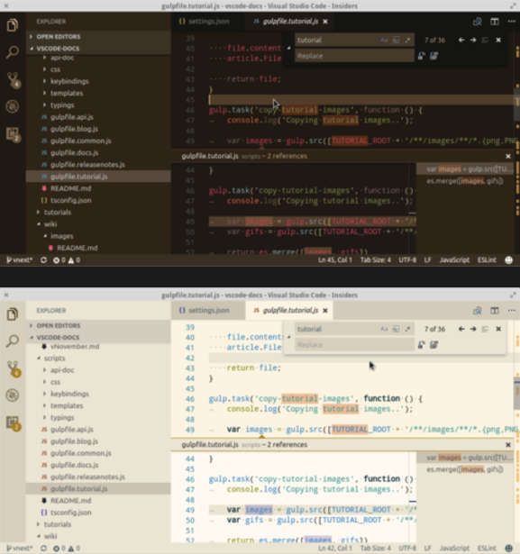
在 April 2017 Microsoft 發佈了新版的 VScode (Version 1.12.1 ) 增添了 Workbench theming 的功能，可以讓我們客製化整個編輯器的配色．
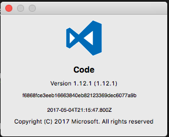
有美感且有興趣完全打造自己風格的編輯器請參考官方說明：Theme Color Reference.
如果你沒有美感也關係，也可以直接套用預設的幾個 Theme :
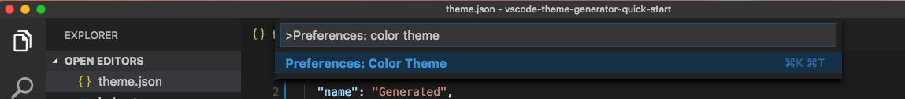
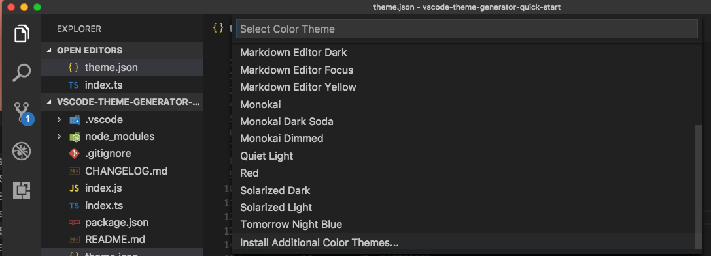
或是下載別人的 Theme Extension:
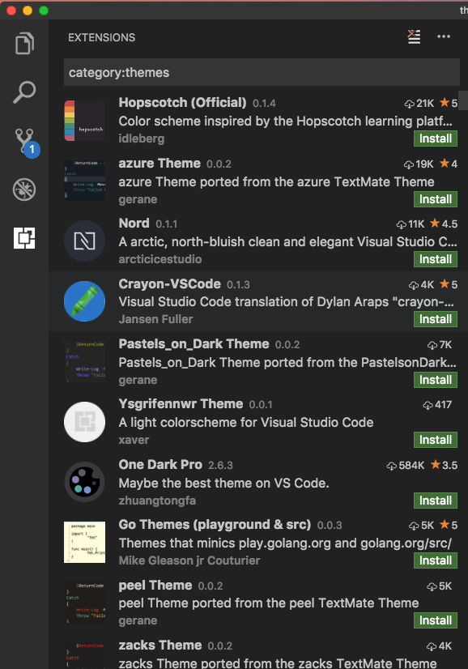
這邊帶大家看幾個修改就好：
How to Customize Your Activity Bar Color
1 | "workbench.colorCustomizations": { |
修改前：
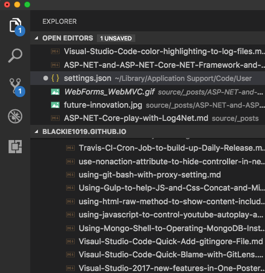
修改後：
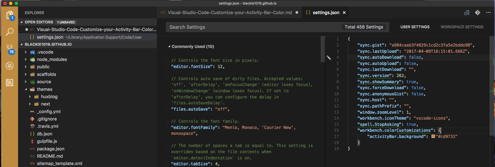
How to Customize Editor Active Tab Color
1 | "workbench.colorCustomizations": { |
修改前：
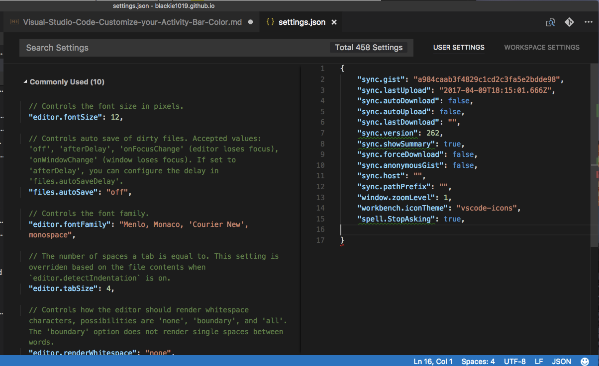
修改後：
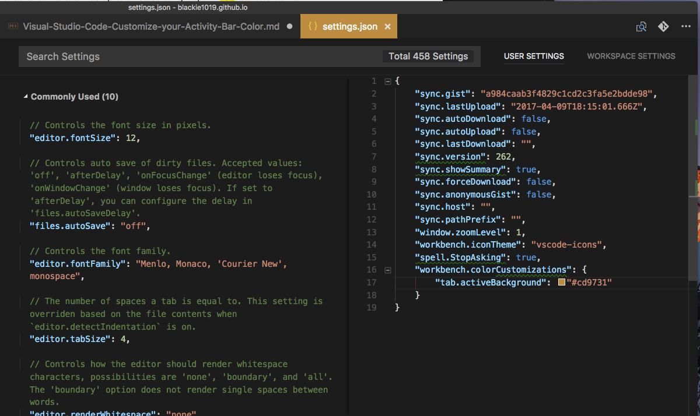
How to Switch to different Theme
如何切換不同 Theme 請參考下方影片：
VSCode Theme Generator
如果你已經有想要呈現的色彩風格的色碼，也可以使用官方的vscode-theme-generator
使用與安裝很簡單，只需先下載官方的原始碼：
git clone https://github.com/Tyriar/vscode-theme-generator-quick-start
cd vscode-theme-generator-quick-start
npm install
然後透過下方程式碼修改 index.ts ：
1 | import { generateTheme, IColorSet } from 'vscode-theme-generator'; |
接著我們透過下方指令即可快速產生 theme.json 檔案
npm start
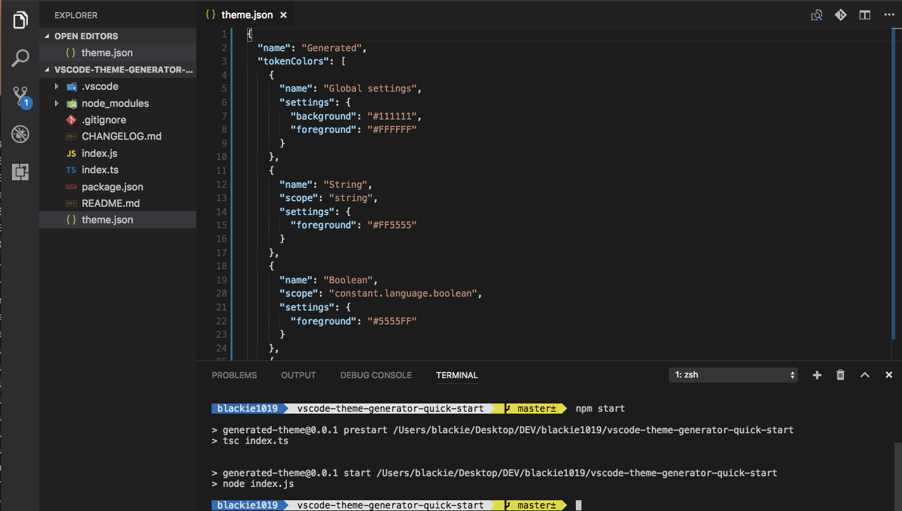
套用的 Theme 結果如下：
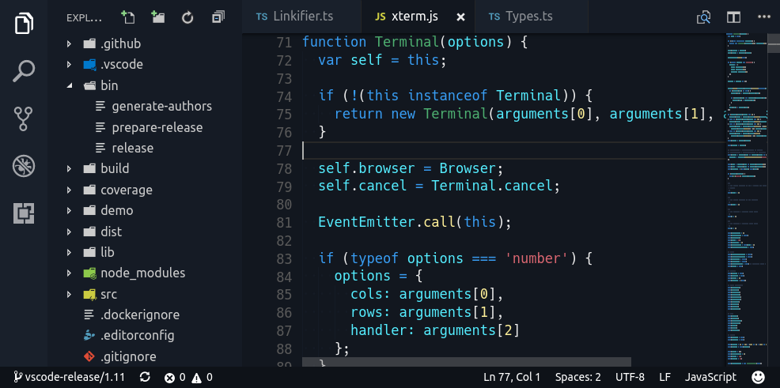
[補充] Color Palette
如果不太會選擇顏色也沒關係，可以參考一些調色盤工具，如 Adobe Color CC
這類型的工具已經幫我們配好色差應該是多少，我們只要給予基準色與選擇想呈現的色差風格即可：
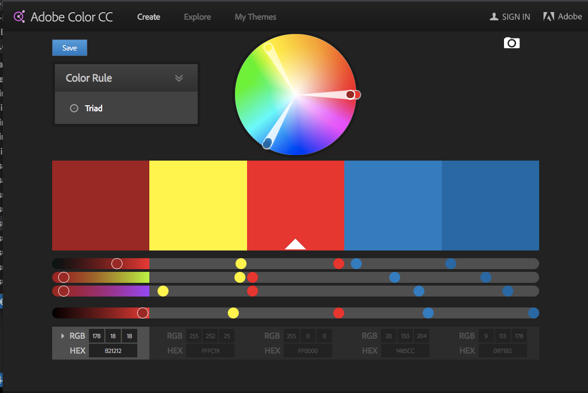
對於這類型調色盤的工具選擇可以參考：
[補充] vscode-icons
眼尖的朋友有詢問影片中左邊的檔案與資料夾為什麼也有 icon 圖示 與資料夾分類的顏色與圖示呢？
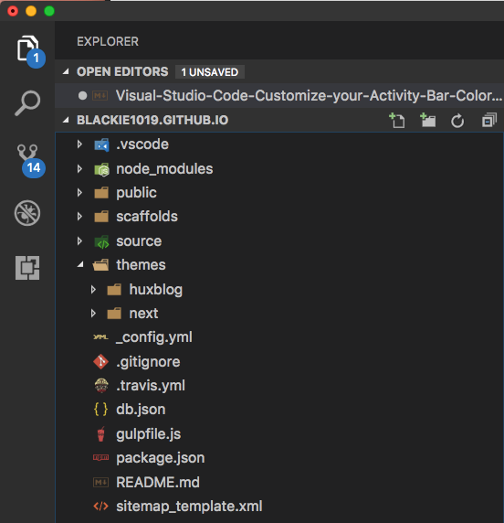
其實這是另外一個套件 vscode-icons 所帶來的效果

有興趣的朋友可以參考先前的Visual Studio Code Icons Extension 安裝與設定